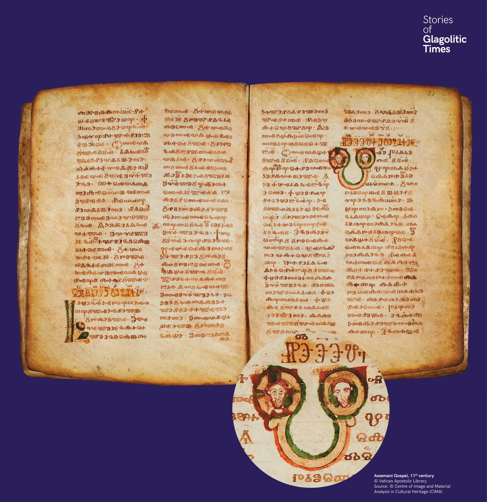

Az Assemani-evangélium díszítése
A leggazdagabban díszített glagolita kézirat az Assemani-evangélium. Egyes iniciálékban a képek a szöveg illusztrációiként is szolgálnak: Krisztus és az általa meggyógyított vak ember ábrázolásával.


A leggazdagabban díszített glagolita kézirat az Assemani-evangélium. Egyes iniciálékban a képek a szöveg illusztrációiként is szolgálnak: Krisztus és az általa meggyógyított vak ember ábrázolásával.
Най-богато украсеният глаголически ръкопис е Асеманиевото евангелие. В някои инициали изображенията служат като илюстрации към текста.